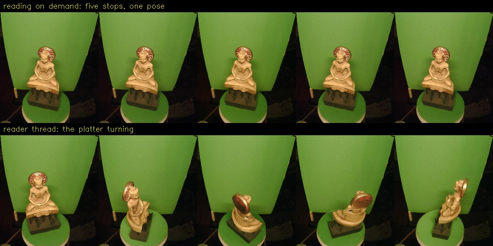
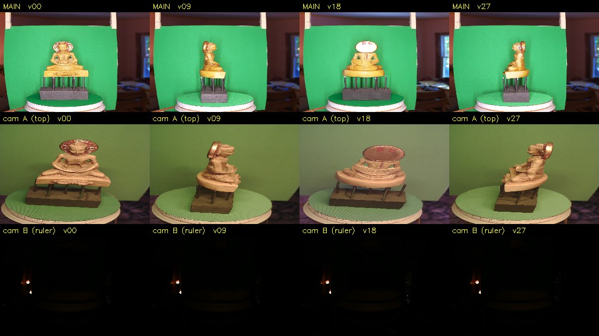
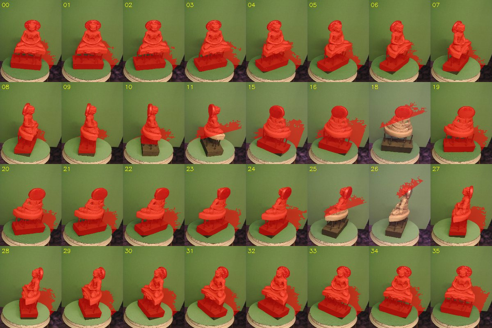
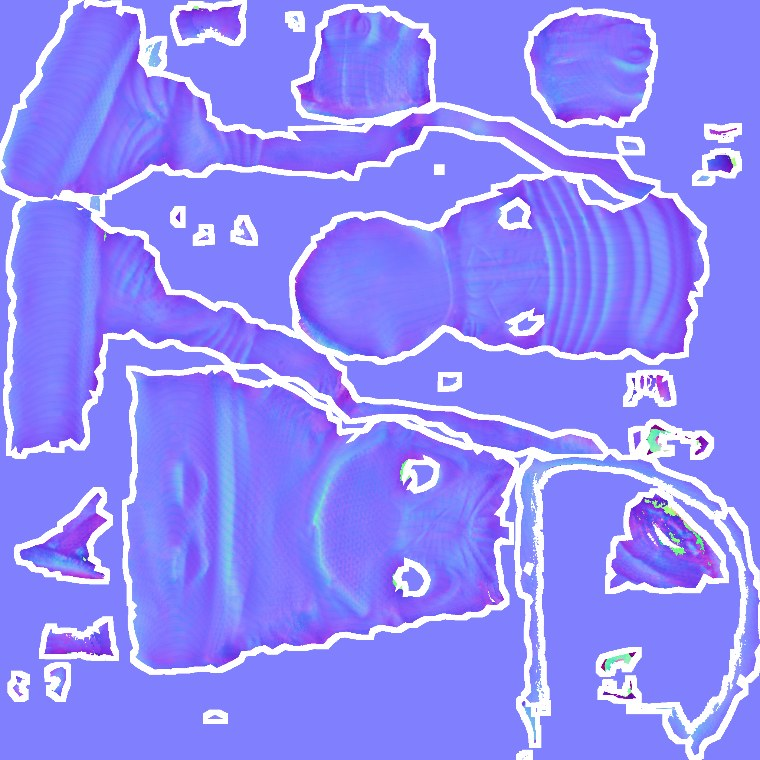
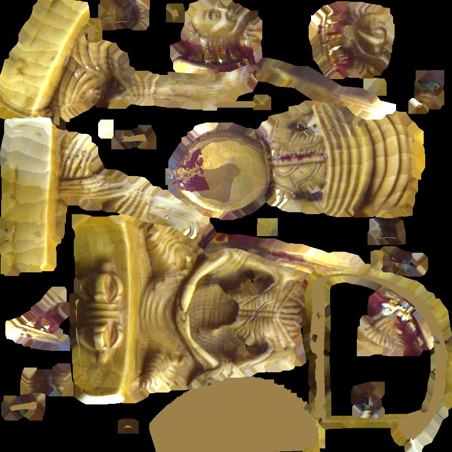

A turntable rig was given extra cameras and a second lamp, and asked to rebuild a 95 mm carved Buddha. Every addition was tested against the finished model rather than assumed. This run starts from a real zero for the first time — the platter is homed on a ruler wrapped round its rim — and it produced the best model the rig has made. The second camera has now been re-lensed, re-aimed and re-fitted across three runs, and still cannot contribute. The reason has changed each time, which is the interesting part.
The current model, 8,530 triangles with its base colour and normal map, drawn in the page. Pull the relief slider to zero to switch the normal map off: the geometry underneath does not change, so everything that disappears is surface detail the two-lamp solve contributed and the carve never had. Rotate to the front and you can see through both openings under the arms. The same viewer is on a page of its own, which is the one to share.
Rotating an object about a vertical axis changes where things are in azimuth and nothing else. The vertical component of every direction — to a camera, to a lamp — is fixed before the platter starts turning, and no number of stops will change it.
Thirty-six views of a turntable are thirty-six samples of one horizontal ring. A hundred and eighty would be a hundred and eighty samples of the same ring.
This one fact explains both of the rig's known limits:
Every addition tested here attacks that constraint directly. The second lamp sits at a different height. The extra cameras were mounted above the first.
Before any of the measurements below could be trusted, a capture had to be thrown away. It is worth describing because nothing about it looked wrong.

The frames were valid JPEGs of the right scene at the right brightness. They were simply all from the beginning of the run. Pairwise difference between them was 1.9 to 2.8 — sensor noise.
The camera produces frames continuously, but each stop spends several seconds changing lamps and taking a main-camera still, so only about two frames get consumed every four seconds. A backlog builds in the pipe, inside ffmpeg, and in the driver's own queue. Draining the pipe before each grab empties only the pipe; ffmpeg refills it from its own buffers immediately.
It was resolution-dependent, which is how it hid for a whole earlier run. At 1280×720 the drain mostly kept up and cost a little freshness. At 1920×1080 it failed outright.
The fix is a reader thread that never stops consuming, keeping only the newest frame — a thread that always reads cannot fall behind. The lesson is the cheap check that now runs before anything is carved: crop the subject, difference every pair of views, and compare against the camera's own noise floor. A carve built on frozen frames is quietly meaningless, and nothing else in the pipeline would have complained.
Until this run every capture began wherever the platter happened to be left. It now begins at a printed mark, found optically, and the difference shows in the result.
A 380 mm ruler is wrapped exactly once around the rim, so every angle has a unique reading at 0.947 degrees per millimetre. The lower camera reads it. Zero is the tape's seam, which is the one vertical edge running the full height of the tape and so is trivial to find.
This matters because the rig has no homing switch, no limit switch and no encoder. An earlier attempt to track the rim by template matching refused to act about as often as it acted, because a finely divided scale is the worst possible tracking target: every tick matches its neighbours equally well, so the answer is a coin toss between periods. Its own code asked for the remedy — a non-repeating mark. The printed numbers are that mark.
It also caught something previously invisible: one commanded move of 3,353 steps delivered 300. Open loop that would have silently ruined a capture, and nothing else in the rig would have noticed.
One honest limitation. Per-stop angle logging is built and works, but the setting that reads the ruler is not stable across a session — an exposure measured as correct became unreadable twenty minutes later because the room lighting changed. Homing at the start of a run is reliable; continuous per-stop tracking wants the rig enclosed first.
Cam A has now been rebuilt around every objection in turn. It is still not contributing, and the reason has moved again.

| What was wrong with cam A | Run 4 | Run 5 | Run 6 |
|---|---|---|---|
| Views that key at all | 25 / 36 | 36 / 36 | 32 / 36 |
| Backdrop behind the subject | no | yes | yes |
| In focus | — | — | 164 vs 6.6 |
| Silhouette area ratio | 213× | 3.7× | 1.9× |
| Mask covers the model | 0.781 | 0.842 | 0.795 |
| Contribution to the hull | none | 0.24% | none |
Each run fixed the previous run's blocker. Run 4: the backdrop did not reach behind the subject. Run 5: it did, but mask coverage was too low to carve with. Run 6: it has a proper lens, it is sharp, its silhouettes are consistent — and the pose still only fits to IoU 0.693.
So this run also tested whether it could at least contribute texture, which needs no silhouette at all. The test compares the colour MAIN and cam A each report for the same surface point, with exposure normalised out:
Disagreement 0.486, against roughly 0.15 where a texture begins to double. Cam A cannot be projected onto this model accurately enough to paint it either.
What this establishes: the blocker is no longer the mounting, the backdrop, the lens or the focus. It is that a seven-parameter weak-perspective pose fitted from silhouettes is not enough for a wide lens at close range at a steep angle. A calibration target is the one thing that would change the answer, and cam A's data is captured and clean for the moment it exists.

Every stop is photographed three times: both lamps off, lower lamp only, upper lamp only. On run 4 the unlit frames made the best base colour by a distance. On run 5 they were useless — the room lights were off and they arrived at mean brightness 1.3 out of 255, so the two lamps had to be fused to stand in for them. Here they read 42.6, so the good recipe applies again.
Structure comes from the ambient bake, which has the flattest illumination of the three and nothing clipped. Colour comes from a lamp bake as three per-channel gains (R 0.516, G 0.888, B 1.596) undoing the room's tungsten cast. Only three numbers cross over, so none of the lamp frames' hard shadows come with them.
That the right answer swung from ambient, to a two-lamp fusion, and back to ambient across three runs is not a discovery about photography. It is the room's own lighting behaving as an uncontrolled variable, which is why enclosing the rig sits near the top of the upgrade list.
The lamps sit at −1.1° and +30.6° elevation. Across 36 stops that is 72 light directions spanning two elevations instead of one, and the smallest singular value of the accumulated normal equations reaches 2.174 — the best of the three runs, after 1.747 and 2.043, against 0.00 with a single lamp, which is structurally unsolvable rather than merely difficult.
Normals solve for 87% of 2,123,332 texels. Median deviation from the smooth surface is 8.3°, with the 90th percentile at 21.0°, after high-passing away the low-frequency bias the raw solve carries.


The standing conventions are applied: the stand and its nails cut away, the bottom capped flat, and the figure scaled so the carving itself is 95 mm tall. Both openings under the arms survive, so the mesh is watertight, manifold and genus 2 — the carving's real topology, and the strongest single check that the reconstruction did not quietly fill them in.
| Property | Value | Note |
|---|---|---|
| Reprojection IoU | 0.9683 | Against 0.778 and 0.950 on the previous runs |
| Bounding box | 65.6 × 95.0 × 39.8 mm | Y-up; height is the scale reference |
| Triangles | 8,530 | 4,944 vertices after UV splitting |
| Genus | 2 | Both arm openings preserved |
| Watertight | yes | Manifold, consistently wound |
| Volume | 71.1 cm³ | Visual hull — an upper bound, not a measurement |
Every file is a plain download; nothing is behind a login.
fasting-buddha.glbTextured model with base colour and normal map. Y-up.5.2 MB
fasting-buddha.objSame geometry and UVs, with its .mtl.776 KB
fasting-buddha-solid.stlGeometry only, Z-up — stands upright in slicers and CAD.427 KB
fasting-buddha-texture.pngBase colour: ambient structure, lamp white balance.2.7 MB
fasting-buddha-normal.pngTangent-space relief from the two-lamp solve.2.2 MB
fasting-buddha-alt-lamp-lit.pngAn alternative, lamp-lit base colour, kept for comparison.3.1 MB
fasting-buddha.mtlMaterial file for the OBJ.140 bytes
Calibrate cam A. Three runs have now removed every other objection to it. A checkerboard or ChArUco target on the stage, giving real intrinsics including radial distortion, is the only remaining thing between this rig and a second elevation — which simulation puts at 23.6% hull excess down to 10.2%.
Enclose the rig. The correct colour source and the correct ruler exposure have both changed between sessions purely because of room lighting. That is not a variable worth leaving to a light switch.
A caliper across the carving's width. Height is still the only dimension tied to a measurement; width and depth are whatever the hull produced.
The measured geometry behind these three, and the full ranked upgrade list, are in the section below.
A working model of the machine, built from measurements where they exist and from photographs where they do not. It answers one question with a number instead of an argument: does each camera actually have a backdrop behind the subject.
Each camera is drawn with the wedge it sees, out to the backdrop plane. The red cone on the subject’s head is the set of surface directions no camera on this rig will ever face squarely: with the highest camera at 39.5°, anything tilted more than 50.5° from vertical is only ever seen obliquely. Millimetres, Y up, origin on the platter at the axis.
| Quantity | Value | Where it came from |
|---|---|---|
| Main camera to axis | 340 mm | Solved in the carve |
| Main camera elevation | 1.16° | Measured pitch; level with the subject |
| Cam A elevation | 39.5° | Registering the main camera’s hull against cam A’s pictures |
| Lamp elevations | 4.4° and 35.9° | Photometric solve on run 5. Run 6 solved −1.1° and 30.6° with the lamps unmoved, so the spread is the solve’s own uncertainty |
| Turntable diameter | 121.0 mm | A 380 mm ruler wraps it exactly once |
| Subject and pedestal | 95 / 85.6 mm | Measured by hand |
| Steps per revolution | 38,851 | Calibrated over ten revolutions |
| Backdrop size and distance | 300 × 400 mm, 150 mm back | Scaled off the photographs |
| Cam A and cam B distances | 320 / 240 mm | Cam B implied by 6.18 px/mm; cam A eyeballed |
Cameras and backdrop are bolted to the same frame; only the subject turns. So a camera either has the panel behind the whole cylinder the subject sweeps out, at every rotation, or it never does. One geometric test per camera, measured at the panel’s own plane:
| Camera | Side margin | Above | Below | Verdict |
|---|---|---|---|---|
| MAIN | +102 mm | +161 mm | +102 mm | Covered, comfortably |
| Cam A | +102 mm | +281 mm | −20 mm | Room visible below the subject |
| Cam B | +96 mm | +59 mm | +187 mm | Covered |
The model predicts the failure that was actually observed, at the end it was observed at. That is the only reason to trust anything else it says.
Cam A looks down at 39.5°, and its sight line past the base of the subject lands 20 mm below the panel’s lower edge. That is where two of its 36 masks came back truncated. For a panel 150 mm behind the axis, the bottom edge must reach +65 mm above the platter for a level camera, −22 mm at 30°, −61 mm at 40° and −195 mm at 60°. The present panel spans −40 to +360 mm: far taller than needed at the top, short at the bottom.
| Change | The measurement behind it | |
|---|---|---|
| 1 | Backlit cyclorama, from 200 mm below the platter to 250 mm above | Cam A is 20 mm short of backdrop and contributes 0.24%. A neutral panel also removes the green bounce that left the albedo with red minus green of 34.4. |
| 2 | A real calibration target (ChArUco board or cube) | With the backdrop fixed, cam A still only reached 0.842 mask coverage. The 7-parameter pose model is the blocker now. |
| 3 | Enclose the rig | Unlit frames went from mean brightness 36.0 to 1.3 between runs because of a room light switch, and the colour recipe changed with them. |
| 4 | Closed-loop rotary stage, encoder on the output shaft | About 1° of backlash, and one move that delivered 300 of 3,353 steps. Ruler homing catches it (0.285°) but does not remove it. |
| 5 | Motorised elevation for the second camera | Hull excess 23.6% to 10.2% with one ring at 30°. Cannot pay until 1 and 2 are done. |
| 6 | Cross-polarisation on lamps and lenses | Specular highlights forced a 97th-percentile cap in the photometric solve and blew out the ruler tape. |
| 7 | Structured-light projector | The only item that addresses concavity, which silhouettes cannot reach at any elevation. A change of method, not an upgrade. |
| 8 | A scale reference and a non-occluding mount | Height is the only dimension tied to a measurement; the five pins occlude the base and force the flat-bottom convention. |
Items 1 to 3 remove measured blockers; 4 and 5 unlock a measured gain that is currently unreachable; 6 to 8 are real improvements that do not depend on anything else. The coverage test assumes the subject’s swept cylinder, 33 mm radius and 95 mm tall on an 85.6 mm pedestal, and a backdrop 150 mm behind the axis.